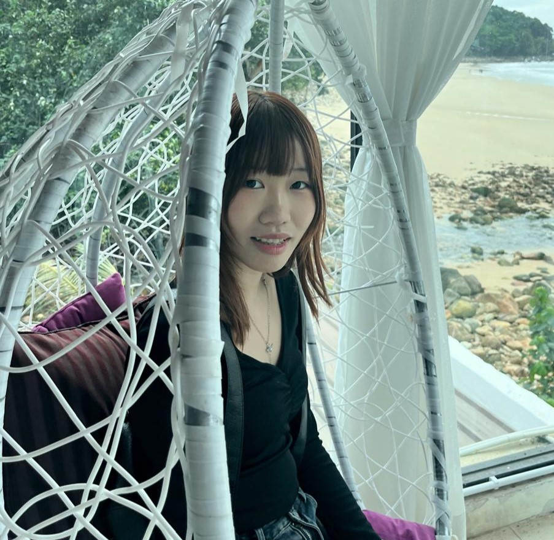

Student ID: 102768672
Hi, I'm Alison. I am a passionate data science student who loves working on projects that combine technology and real-world problem-solving. In this assignment, I contributed to the design and visualization of water dynamics by country, aiming to raise awareness about global water scarcity issues and promote sustainability.

Student ID: 102778817
I'm Brenda, a data visualization enthusiast with a keen interest in environmental sustainability. For this project, I helped analyze and develop the interactive visualizations for different water dynamics in a Europe-wide overview. The goal is to make data more accessible and encourage informed decision-making for better resource management.
HydroScope is a platform dedicated to visualizing Europe’s water dynamics through interactive and insightful data presentations. Our visualizations include a water stress choropleth map, stacked area charts showcasing trends in water usage and abstraction categories across Europe, and line charts illustrating changes in total renewable freshwater. We also provide country-specific insights with stacked bar charts comparing water usage and abstraction categories, bar charts displaying total renewable freshwater, and rankings of the top European countries experiencing the highest water stress. With intuitive tools and a focus on clarity, HydroScope helps uncover the stories behind Europe’s water data, supporting informed decisions and sustainable water management.